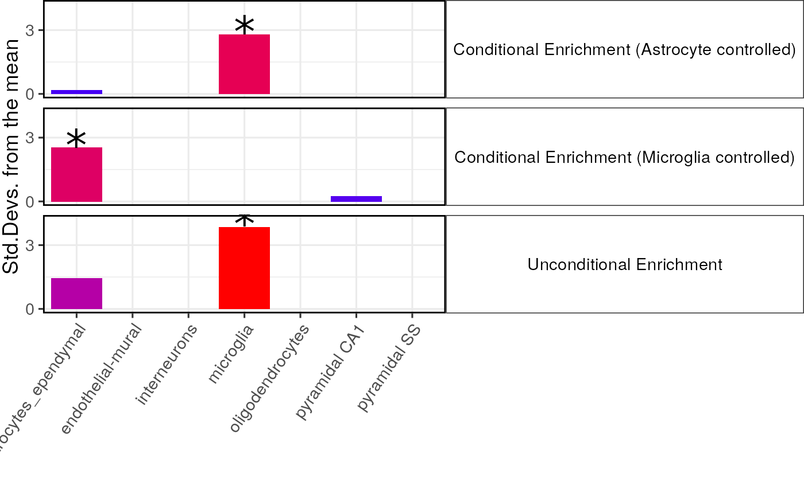

vignettes/conditional.Rmd
conditional.Rmd
ctd <- ewceData::ctd()
hits <- ewceData::example_genelist()
## NOTE: rep=100 for demo purposes only.
## Use >=10,000 for publication-quality results.
reps <- 100
annotLevel <- 1In a followup paper we found that an enrichment detected for Schizophrenia in Somatosensory Pyramidal neurons could be explained by accounting for expression in Hippocampal CA1 pyramidal neurons. These results are described here:
Those results were generated using an alternative enrichment method designed for use with GWAS Summary Statistics rather than gene sets. The same sort of approach can be extended to EWCE as well, and we have implemented it within this package. When testing for enrichment the other gene sets that are sampled are selected to have equivalent specificity in the controlled cell type.
We demonstrate it’s use below to test whether the enrichment in astrocytes is still present after controlling for the enrichment within microglia:
unconditional_results <- EWCE::bootstrap_enrichment_test(
sct_data = ctd,
hits = hits,
sctSpecies = "mouse",
genelistSpecies = "human",
reps = reps,
annotLevel = annotLevel)
conditional_results_micro <- EWCE:: bootstrap_enrichment_test(
sct_data = ctd,
hits = hits,
sctSpecies = "mouse",
genelistSpecies = "human",
reps = reps,
annotLevel = annotLevel,
controlledCT = "microglia")
conditional_results_astro <- EWCE::bootstrap_enrichment_test(
sct_data = ctd,
hits = hits,
sctSpecies = "mouse",
genelistSpecies = "human",
reps = reps,
annotLevel = annotLevel,
controlledCT = "astrocytes_ependymal")
merged_results <- rbind(
data.frame(unconditional_results$results,
list="Unconditional Enrichment"),
data.frame(conditional_results_micro$results,
list="Conditional Enrichment (Microglia controlled)"),
data.frame(conditional_results_astro$results,
list="Conditional Enrichment (Astrocyte controlled)")
)
plot_list <- EWCE::ewce_plot(total_res = merged_results,
mtc_method = "BH")
print(plot_list$plain)
When controlling for astrocytes the enrichment in astrocytes is totally abolished as expected, and vica versa. The enrichment in microglia remains strongly significant however after controlling for astrocytes., suggesting that this enrichment is independent of that in astrocytes.
Traditionally the standard analysis run on all gene sets was the GO enrichment analysis. Once you have established that a given gene list is enriched for a given cell type, it becomes questionable whether a GO enrichment is driven purely by the underlying cell type enrichment. For instance, it is well established that genes associated with schizophrenia are enriched for the human post-synaptic density genes, however, it has also been shown that schizophrenia is enriched for specificity in CA1 pyramidal neurons (which highly express hPSD genes). These two enrichments can be disassociated using the following analysis:
# set seed for bootstrap reproducibility
mouse_to_human_homologs <- ewceData::mouse_to_human_homologs()
m2h = unique(mouse_to_human_homologs[,c("HGNC.symbol","MGI.symbol")])
schiz_genes <- ewceData::schiz_genes()
id_genes <- ewceData::id_genes()
mouse.hits.schiz = unique(m2h[m2h$HGNC.symbol %in% schiz_genes,"MGI.symbol"])
mouse.hits.id = unique(m2h[m2h$HGNC.symbol %in% id_genes,"MGI.symbol"])
mouse.bg = unique(m2h$MGI.symbol)
hpsd_genes <- ewceData::hpsd_genes()
mouse.hpsd = unique(m2h[m2h$HGNC.symbol %in% hpsd_genes,"MGI.symbol"])
rbfox_genes <- ewceData::rbfox_genes()
res_hpsd_schiz = controlled_geneset_enrichment(disease_genes=mouse.hits.schiz,
functional_genes = mouse.hpsd,
bg_genes = mouse.bg,
sct_data = ctd,
annotLevel = 1,
reps=reps,
controlledCT="pyramidal CA1")
res_rbfox_schiz =
controlled_geneset_enrichment(disease_genes=mouse.hits.schiz,
functional_genes = rbfox_genes,
bg_genes = mouse.bg,
sct_data = ctd,
annotLevel = 1,
reps=reps,
controlledCT="pyramidal CA1")
print(res_hpsd_schiz)
print(res_rbfox_schiz)
res_hpsd_id =
controlled_geneset_enrichment(disease_genes=mouse.hits.id,
functional_genes = mouse.hpsd,
bg_genes = mouse.bg,
sct_data = ctd,
annotLevel = 1,
reps=reps,
controlledCT = "pyramidal SS")
res_rbfox_id = controlled_geneset_enrichment(disease_genes=mouse.hits.id,
functional_genes = rbfox_genes,
bg_genes = mouse.bg,
sct_data = ctd,
annotLevel = 1,
reps=reps,
controlledCT="pyramidal SS")
print(res_hpsd_id)
print(res_rbfox_id)The analysis also tests for enrichment of Rbfox binding genes in the schizophrenia susceptibility genes, as well as both hPSD and Rbfox genes in Intellectual Disability genes. All of the enrichments are confirmed as still being present after controlling for the associated cell type, apart from the enrichment of PSD genes in Schizophrenia which falls from borderline to non-significant.
controlledCTs = c("pyramidal CA1","pyramidal SS","interneurons")
res_hpsd_schiz =
controlled_geneset_enrichment(disease_genes=mouse.hits.schiz,
functional_genes = mouse.hpsd,
bg_genes = mouse.bg,
sct_data = ctd,
annotLevel = 1,
reps=reps,
controlledCT=controlledCTs)
res_rbfox_schiz =
controlled_geneset_enrichment(disease_genes=mouse.hits.schiz,
functional_genes = rbfox_genes,
bg_genes = mouse.bg, sct_data = ctd,
annotLevel = 1, reps=reps,
controlledCT=controlledCTs)
print(res_hpsd_schiz)
print(res_rbfox_schiz)
res_hpsd_id =
controlled_geneset_enrichment(disease_genes=mouse.hits.id,
functional_genes = mouse.hpsd,
bg_genes = mouse.bg,
sct_data = ctd,
annotLevel = 1,
reps=reps,
controlledCT=controlledCTs)
res_rbfox_id = controlled_geneset_enrichment(disease_genes=mouse.hits.id,
functional_genes = rbfox_genes,
bg_genes = mouse.bg,
sct_data = ctd,
annotLevel = 1,
reps=reps,
controlledCT=controlledCTs)
print(res_hpsd_id)
print(res_rbfox_id)
utils::sessionInfo()## R version 4.1.1 (2021-08-10)
## Platform: x86_64-pc-linux-gnu (64-bit)
## Running under: Ubuntu 20.04.2 LTS
##
## Matrix products: default
## BLAS/LAPACK: /usr/lib/x86_64-linux-gnu/openblas-pthread/libopenblasp-r0.3.8.so
##
## locale:
## [1] LC_CTYPE=en_US.UTF-8 LC_NUMERIC=C
## [3] LC_TIME=en_US.UTF-8 LC_COLLATE=en_US.UTF-8
## [5] LC_MONETARY=en_US.UTF-8 LC_MESSAGES=C
## [7] LC_PAPER=en_US.UTF-8 LC_NAME=C
## [9] LC_ADDRESS=C LC_TELEPHONE=C
## [11] LC_MEASUREMENT=en_US.UTF-8 LC_IDENTIFICATION=C
##
## attached base packages:
## [1] stats graphics grDevices utils datasets methods base
##
## other attached packages:
## [1] ewceData_1.1.0 ExperimentHub_2.1.4 AnnotationHub_3.1.6
## [4] BiocFileCache_2.1.1 dbplyr_2.1.1 BiocGenerics_0.39.2
## [7] EWCE_2.0.0 RNOmni_1.0.0 BiocStyle_2.21.4
##
## loaded via a namespace (and not attached):
## [1] readxl_1.3.1 backports_1.2.1
## [3] systemfonts_1.0.3 plyr_1.8.6
## [5] lazyeval_0.2.2 orthogene_0.99.8
## [7] listenv_0.8.0 GenomeInfoDb_1.29.10
## [9] ggplot2_3.3.5 digest_0.6.28
## [11] htmltools_0.5.2 fansi_0.5.0
## [13] magrittr_2.0.1 memoise_2.0.0
## [15] openxlsx_4.2.4 limma_3.49.4
## [17] globals_0.14.0 Biostrings_2.61.2
## [19] matrixStats_0.61.0 pkgdown_1.6.1
## [21] colorspace_2.0-2 blob_1.2.2
## [23] rappdirs_0.3.3 textshaping_0.3.6
## [25] haven_2.4.3 xfun_0.27
## [27] dplyr_1.0.7 crayon_1.4.1
## [29] RCurl_1.98-1.5 jsonlite_1.7.2
## [31] glue_1.4.2 gtable_0.3.0
## [33] zlibbioc_1.39.0 XVector_0.33.0
## [35] HGNChelper_0.8.1 DelayedArray_0.19.4
## [37] car_3.0-11 future.apply_1.8.1
## [39] SingleCellExperiment_1.15.2 abind_1.4-5
## [41] scales_1.1.1 DBI_1.1.1
## [43] rstatix_0.7.0 Rcpp_1.0.7
## [45] viridisLite_0.4.0 xtable_1.8-4
## [47] foreign_0.8-81 bit_4.0.4
## [49] stats4_4.1.1 htmlwidgets_1.5.4
## [51] httr_1.4.2 ellipsis_0.3.2
## [53] farver_2.1.0 pkgconfig_2.0.3
## [55] sass_0.4.0 utf8_1.2.2
## [57] tidyselect_1.1.1 rlang_0.4.12
## [59] reshape2_1.4.4 later_1.3.0
## [61] AnnotationDbi_1.55.2 munsell_0.5.0
## [63] BiocVersion_3.14.0 cellranger_1.1.0
## [65] tools_4.1.1 cachem_1.0.6
## [67] generics_0.1.0 RSQLite_2.2.8
## [69] broom_0.7.9 evaluate_0.14
## [71] stringr_1.4.0 fastmap_1.1.0
## [73] yaml_2.2.1 ragg_1.1.3
## [75] babelgene_21.4 knitr_1.36
## [77] bit64_4.0.5 fs_1.5.0
## [79] zip_2.2.0 purrr_0.3.4
## [81] KEGGREST_1.33.0 gprofiler2_0.2.1
## [83] future_1.22.1 mime_0.12
## [85] compiler_4.1.1 plotly_4.10.0
## [87] filelock_1.0.2 curl_4.3.2
## [89] png_0.1-7 interactiveDisplayBase_1.31.2
## [91] ggsignif_0.6.3 tibble_3.1.5
## [93] bslib_0.3.1 homologene_1.4.68.19.3.27
## [95] stringi_1.7.5 highr_0.9
## [97] desc_1.4.0 forcats_0.5.1
## [99] lattice_0.20-45 Matrix_1.3-4
## [101] vctrs_0.3.8 pillar_1.6.4
## [103] lifecycle_1.0.1 BiocManager_1.30.16
## [105] jquerylib_0.1.4 cowplot_1.1.1
## [107] data.table_1.14.2 bitops_1.0-7
## [109] httpuv_1.6.3 patchwork_1.1.1
## [111] GenomicRanges_1.45.0 R6_2.5.1
## [113] bookdown_0.24 promises_1.2.0.1
## [115] gridExtra_2.3 rio_0.5.27
## [117] IRanges_2.27.2 parallelly_1.28.1
## [119] codetools_0.2-18 MASS_7.3-54
## [121] assertthat_0.2.1 SummarizedExperiment_1.23.5
## [123] rprojroot_2.0.2 withr_2.4.2
## [125] sctransform_0.3.2 S4Vectors_0.31.5
## [127] GenomeInfoDbData_1.2.7 parallel_4.1.1
## [129] hms_1.1.1 grid_4.1.1
## [131] tidyr_1.1.4 rmarkdown_2.11
## [133] MatrixGenerics_1.5.4 carData_3.0-4
## [135] ggpubr_0.4.0 Biobase_2.53.0
## [137] shiny_1.7.1